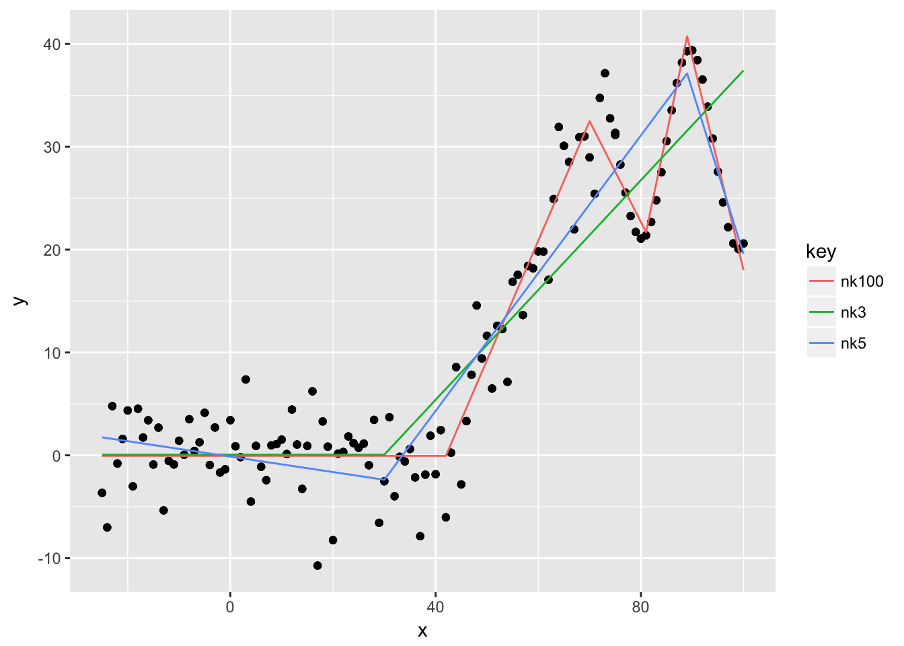
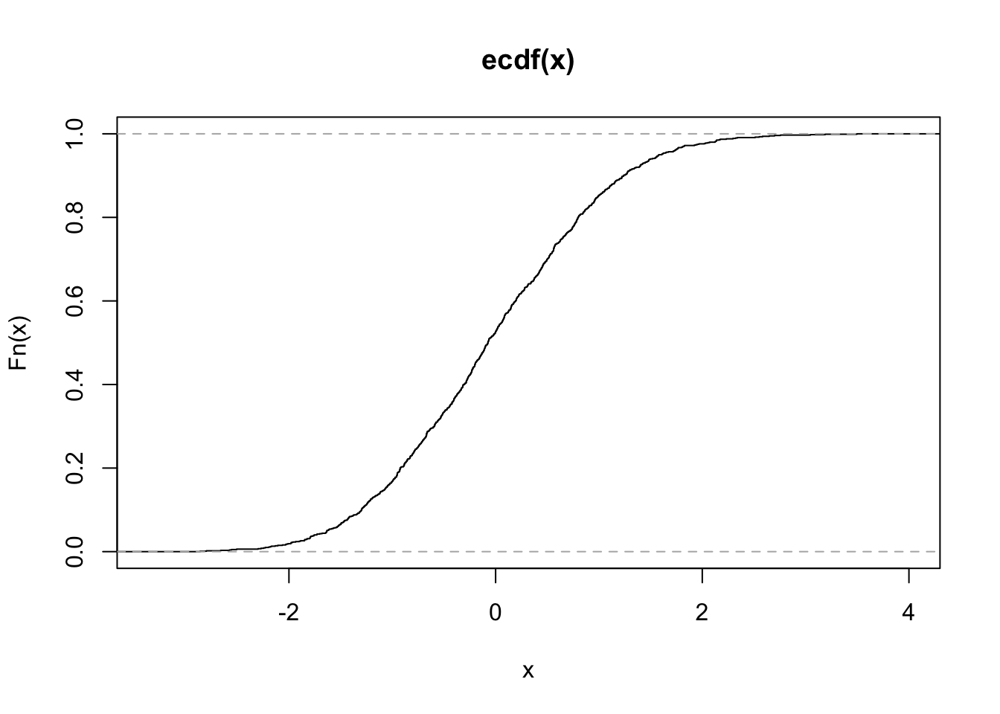

Chapter 8 Flexible regression and classification methods
The curse of dimensionality makes it very hard to estimate fully non-parametric regression function \(\hat{m} = \mathbb{E}[Y|X = x]\) or classification function \(\hat{\pi}_j = \mathbb{P}[Y = j | X = x]\). Hence, by making some (reasonable) structural assumptions, we can improve our models significantly. Generally, we consider the mapping \(\mathbb{R}^p \rightarrow \mathbb{P}\) via the function \(g(\cdot)\) for both the regression and the classification problem.
8.1 Additive Models
8.1.1 Structure
One assumption we can make is to assume a particular functional form of \(g(\cdot)\), namely an additive. That is \[g_{add}(x) = \mu + \sum\limits_{j = 1}^pg(x_j) \] \(E[g(x_j)] = 0\) is required to make the model identifiable only. Note that we have not placed any assumption on \(g(x_j)\) yet, that is, \(g(x_j)\) can be fully non-parametric, but each dimension is mapped separately. In other words every \(g(x_j) \;\; j = 1, ..., p\) models one input dimension and mapping of input to output is obtained by summing the transformed inputs up. This eliminates the possibility of interaction effects.
8.1.2 Fitting Procedure
Additive models can be estimated with a technique called back-fitting. However, the model can be estimated with any non-parametric method for one-dimensional smoothing. Here is the receipt:
- since we assume an additive model, we need to initialize all \(p\) components of it with zero, that is setting \(g_j(\cdot) = 0 \;\; j = 1,..., p\) plus setting \(\mu = n^{-1}\sum Y_i\). * Then we fit one-dimensional smoother repeatedly, that is solving the one-dimensional smoothing problem \(Y - \mu - \sum\limits_{j \neq k}\hat{g}_j = \hat{g}_j(x_j)\), or put differently \(\hat{g}_j = S_j(Y - \mu1 - \sum\limits_{j \neq k}g_j)\). This has to be done repeatedly for \(j = 1, ..., p, 1, ..., p\) etc.
- Stop iterating when functions don’t change much anymore, that is, when the following quantity is less than a certain tolerance. \[\frac{|\hat{g}_{i, new} - \hat{g}_{i, old}|}{|\hat{g}_{i, old}|}\]
- Normalize the functions by subtracting the mean from them: \[\tilde{g}_j = \hat{g}_j - n^{-1} \sum\limits_{i = 1}^n \hat{g}_j(x_{ij})\]
Back-fitting is a coordinate-wise optimization method that optimizes one coordinate at the time (one \(g(\cdot)\), but can be more than one parameter), which may be slower in convergence than a general gradient descent that optimizes all directions simultaneously but also more robust.

8.1.3 Additive Models in R
You can use the package mgcv
data("ozone", package = "gss")
fit <- mgcv::gam(upo3 ~ s(vdht) + s(wdsp) + s(hmdt) + s(sbtp),
data = ozone)
plot(fit, pages = 1) 
You can see that vdht enters the model almost linearly. That is, with an increase of one unit of vdht, the predicted 03 value increases linearly. sbtp is different. Depending on the value of sbtp, the increase in the predicted value is different. Low sbtp values hardly have an impact on the response, higher values do.
8.2 MARS
MARS stands for multivariate adaptive regression splines and allows pice-wise linear curve fitting. In contrast to GAMs, they allow for interactions between the variables. MARS is very similar to regression trees, but it has a continuous response. It uses reflected pairs of basis functions
\[\begin{equation} (x_j -d)_{+} = \begin{cases} x_j - d \;\;\ \text{if} \;\;\ x_j - d > 0 \\ 0 \;\;\ \text{else}. \end{cases} \end{equation}\]and it counterpart \((d - x_j)_{+}\). The index \(j\) refers to the j-th predictor variable, d is a knot at one of the \(x_js\). The pool of basis functions to consider is called \(\mathcal{B}\) and contains all variables with all potential knots, that is \[ \mathcal{B} = \{(x_j - d)_+ \;\;\; (d - x_j)_+ \;\;\;j = \{1, ..., p\} \;\; d = \{x_{1j}, ..., x_{nj}\}\}\] The model then is \[ g(x) = \mu + \sum\limits_{m = 1}^M\beta_m h_m(x) = \sum\limits_{m = 0}^M\beta_m h_m(x)\] The model uses forward selection and backward deletion and optimizes some (generalized) cross-validation criterion. Here is the receipt:
- initialize \(\mathcal{M} = \{h_0(\cdot) = 1\}\) and estimate \(\beta_0\) as the data average of the response \(n^{-1}\sum\limits_{i = 1}^n Y_i\).
- for \(r = 1, 2, ...\) search for a new pair of function \((h_{2 r-1} \;\; h_{2 r})\) which are of the form \[h_{2 r-1} = (x_j -d)_+ \times h_l\] \[h_{2 r} = (d - x_j)_+ \times h_l\] that reduce the residual sum of squares the most with some \(h_l\) from \(\mathcal{M}\) that some basis functions from \(\mathcal{B}\) does not contain \(x_j\). The model becomes \[\hat{g}(x) = \sum\limits_{m = 0}^{2r}\hat{\beta}_m h_m(x)\] which can be estimated by least squares. Update the set \(\mathcal{M}\) to be \(\mathcal{M} = \mathcal{M}_{old} \cup \{h_{2r-1}, h_{2r}\}\)
- Iterate the above step until the set \(\mathcal{M}\) becomes large enough.
- Do backward deletion (pruning) by removing the one function from a reflected pair that increases the residual sum of squares the least.
- Stop the pruning when some GCV score reaches its minimum.
From the receipt above, we can see that \(d\)-way interactions are only possible if a \(d-1\)-way interaction with a subset of the \(d\)-way interaction is already in the model. For interpretability and other reasons, restricting the number of interactions to three or two is beneficial. Restricting the degree of interaction to one (which is actually no interaction) will yield an additive model.
8.2.1 Details for Dummies
Note that by using reflective pairs \(\big\{(x_j - d)_+ \;\;\; (d - x_j)_{+}\; \}\), we construct a piece-wise linear function with one knot at \(d\), since we sum the functions (which both a have a zero part that does not overlap) up. This hinge function (or better the two parts of individually) will be multiplied with a respective \(\beta\), so the slope is adaptive. Also, since each of the functions have its own \(d\), the kink of the function must not occur at \(y = 0\) (this is wrong).
8.2.2 Example
Let us consider the simple case of a one dimensional predictor space. We add noise to data that is piece-wise linear up to \(x= 100\) and then follows a sine-wave. We then fit three mars models with different number of maximal knots.
library("earth")
sim <- data_frame( x = -25:75,
y = pmax(0, x - 40) + rnorm(100, 0, 3)) %>%
bind_rows(data_frame( x = 75:100, y = -1*sqrt(x)* sin(x/3) + 30))
fitted <- data_frame(
nk3 = earth(y~x, data = sim, nk = 3),
nk5 = earth(y~x, data = sim, nk = 5),
nk100 = earth(y~x, data = sim, nk = 100)
)
sim2 <- fitted %>%
map_df(~predict(.x)) %>%
bind_cols(sim) %>% gather(key, value, -x, -y)
ggplot(sim2) +
geom_point(aes(x = x, y = y)) +
geom_line(aes(x = x, y = value, color = key)) 
summary(fitted$nk3) ## Call: earth(formula=y~x, data=sim, nk=3)
##
## coefficients
## (Intercept) 0.06140576
## h(x-30) 0.53378814
##
## Selected 2 of 3 terms, and 1 of 1 predictors
## Termination condition: Reached nk 3
## Importance: x
## Number of terms at each degree of interaction: 1 1 (additive model)
## GCV 36.0235 RSS 4361.396 GRSq 0.8112337 RSq 0.8171787The example shows what we expected. The green line with a maximum of three knots uses just one knot around 30, and only the right part of the reflected pair is used. It cannot distinguish between the linear segment between 40 and 75 and the sine-wave afterwards. By allowing more knots, we can see that the red line fits the data quite well. Note that the default of degree is just \(1\), so we don’t have interaction terms in the model. This does not matter for a one-dimensional example anyways.
8.3 Neural Networks
Neural networks are high-dimensional non-linear regression models. The way it works is best illustrated with a picture.

This is a neural network with one hidden layer, \(p\) input layers and \(q\) output layers. Mathematically speaking, the model is: \[ g_k(x) = f_0\Big(\alpha_k + \sum\limits_{h = 1}^q w_{hk} \phi(\tilde{\alpha}_h + \sum\limits_{j = 1}^p w_{jh}x_j)\Big)\] Where \(\phi(x)\) is the sigmoid function \(\frac{exp(x)}{1 + exp(x)}\), \(f_0\) is the sigmoid function for classification and the identity for regression. In the case of regression \(k = 1\) is used, for classification we use \(g_0, ..., g_{J-1}\) and then use the Bayes classifier \(\mathcal{\hat{C}(x)} = \arg\max\limits_{0<j<J-1} g_j(x)\) (is that correct?), which is called the softmax in the neural network literature.
8.3.1 Fitting Neural Networks (in R)
The nnet function from the package with the same name basically uses gradient descent to maximize the likelihood. It is important to first scale the data so the gradient descent does not get stuck in flat regions of the sigmoid function.
set.seed(22)
data("ozone", package = "gss")
unloadNamespace("MASS")
scaled <- ozone %>%
select(-upo3) %>%
scale() %>%
as_data_frame() %>%
mutate(log_upo3 = log(ozone$upo3))
fit <- nnet::nnet( log_upo3 ~., data = scaled,
size = 3, # how many nodes in the *one* hidden layer.
decay = 4e-4, # regularization. Multiply weights by 1 - decay after
# gradient step.
linout = TRUE, # linear output units (refers to f0?).
skip = TRUE, # add skip-layer connections between output and input.
maxit = 500 ) The weights between the nodes are:
summary(fit) ## a 9-3-1 network with 43 weights
## options were - skip-layer connections linear output units decay=4e-04
## b->h1 i1->h1 i2->h1 i3->h1 i4->h1 i5->h1 i6->h1 i7->h1 i8->h1 i9->h1
## -2.28 1.27 -0.34 -2.57 1.46 0.03 0.10 -1.02 -0.39 -0.33
## b->h2 i1->h2 i2->h2 i3->h2 i4->h2 i5->h2 i6->h2 i7->h2 i8->h2 i9->h2
## -12.43 5.09 2.04 8.19 -7.66 -7.01 2.40 -0.31 3.59 -1.19
## b->h3 i1->h3 i2->h3 i3->h3 i4->h3 i5->h3 i6->h3 i7->h3 i8->h3 i9->h3
## -19.77 -6.64 1.49 -4.53 -3.95 2.28 6.05 5.19 10.05 -0.20
## b->o h1->o h2->o h3->o i1->o i2->o i3->o i4->o i5->o i6->o
## 2.50 -1.81 0.68 0.71 0.11 -0.09 -0.49 0.72 0.01 -0.03
## i7->o i8->o i9->o
## 0.04 -0.29 -0.15The in-sample MSE for the regression case is
mean(residuals(fit)^2) ## [1] 0.10367068.4 Projection Pursuit Regression
The model takes the form \[g_{PPR} = \mu + \sum\limits_{k = 1}^q f_k(\sum \limits_{j = 1}^p \alpha_{jk}x_j) \] With \(\sum \limits_{j = 1}^p \alpha_j = 1\) and \(E[f_k(\sum \limits_{j = 1}^p \alpha_{jk}x_j)] = 0 \;\; \text{for all k}\).
\(\mathbf{\alpha}_k x_j\) is the projection of the j-th column in the design matrix onto \(\alpha_k\). The functions \(f_k\) only vary along one direction and are hence called ridge functions.
Projection pursuit regression is similar to both neural nets and additive models. It is similar to GAMs because
- it can be seen as an additive model whereas the predictors were first projected into the optimal direction.
And it is similar neural nets because
- if you assume the identity for \(f_0\) in the neral net (which you typically do for regression) the models become very similar up to the term \(w_{hk} \phi\), which is just \(f_k\) in projection pursuit regression. Hence, instead of assuming a parapetric form (the sigmoid function) and multiplying that transformation with a weight \(w_{hk}\)1 we don’t make any assumption on the form of the function, that is, let \(f_k\) be fully non-parametric.
Probably for that very reason, the model requires much smaller \(q\) than a neural net requires hidden units, at the expense of estimating the ridge functions (which is not necessary for neural nets).
8.4.1 Proejction Pursuit Example
In the following, we illustrate how optimal projections of the initial predictor space can allow us to use an additive functional form to deal with interaction terms. Let us consider the following data-generating model \[ Y = X_1 \times X_2 + \epsilon \; \text{with} \;\epsilon \sim N(0, 1) \; \text{and}\; X_1, X_2 \sim \text{Unif}(-1,1)\]
Where \(X \in \mathbb{R}^2\), i.e. a two-dimensional predictor space with the predictors \(X_1\) and \(X_2\). Using elementary calculus, this can be rewritten as \[ Y = \frac{1}{4} (X_1 + X_2)^2 - \frac{1}{4}(X_1 - X_2)^2\] Hence, we rewrote a multiplicative model as an additive model. As we are using arbitrary smooth functions \(f_k\), we can easily fit the quadratic terms in the equation above, so the problem to solve becomes \[Y = \mu + f_1(X_1 + X_2) - f_2(X_1 - X_2)\] Therefore, the remaining question is how can we choose the two vectors \(\mathbf{\alpha}_1\) and \(\mathbf{\alpha}_2\) such that the result of the projection is \(X_1 + X_2 \;\text{and}\;X_1 - X_2\). With the restriction \(|\alpha| = 1\), it turns out we can proceed as follows: We first project predictor onto \((\alpha_{11}, \alpha_{12}) = (0.7, 0.7)\) and then onto \((\alpha_{11}, \alpha_{12}) = (0.7, -0.7)\). This yields \(0.7(X_1 + X_2)\) and \(0.7(X_1 - X_2)\).
Let’s implement that in R
data <- data_frame(
x1 = runif(500, -1, 1),
x2 = runif(500, -1, 1),
y = x1*x2 + rnorm(500, 0, 0.005)
)
all <- ggplot(data, aes(x = x1, y = x2)) +
geom_point(aes(color = y), size = 3) +
scale_color_gradient2()x1y <- ggplot(data, aes(x = x1, y = y)) +
geom_point(aes(color = y), size = 3) +
geom_smooth() +
scale_color_gradient2()
grid.arrange(all, x1y) We can see the obvious pattern, but we can also see that an additive model would not do well on that.
We can see the obvious pattern, but we can also see that an additive model would not do well on that.
How about using the aforementioned projection?
data <- data %>%
mutate(
projected_x1 = 0.7*(x1 + x2),
projected_x2 = -0.7*(x1 - x2)
)
projected_all <- ggplot(data, aes(x = projected_x1, y = projected_x2)) +
geom_point(aes(color = y), size = 3) +
scale_color_gradient2()
projected_x1 <- ggplot(data, aes(x = projected_x1, y = y)) +
geom_point(aes(color = y), size = 3) +
geom_smooth() +
scale_color_gradient2()
projected_x2 <- ggplot(data, aes(x = projected_x2, y = y)) +
geom_point(aes(color = y), size = 3) +
geom_smooth() +
scale_color_gradient2()
fitted_x1 <- mgcv::gam(y~s(projected_x1), data = data)
fitted_x2 <- mgcv::gam(y~s(projected_x2), data = data)
data <- data %>%
mutate(fitted = predict(fitted_x1) + predict(fitted_x2))
fitted <- ggplot(data, aes(x = x1, y = x2)) +
geom_point(aes(color = fitted), size = 3) +
scale_color_gradient2()
grid.arrange(projected_all, projected_x1, projected_x2, fitted, nrow = 2)
The bottom right picture shows the predictions with the projection pursuit approach, which resembles the original data pretty well. Again, the idea is to use an additive model to account for the interactions properly by first projecting the predictors optimally.
Suppose we did not know the optimal projection. We could use the build-in ppr() command to fit a projection pursuit regression and then show us the projections used.
First, we fit the model and check out the projections
fit <- ppr(y~ x1+x2, nterms = 2, data = data)
sfsmisc::mult.fig(2)
plot(fit)
Now, let us look at the \(\alpha\)s.
fit$alpha## term 1 term 2
## x1 0.7795395 -0.7788790
## x2 -0.6263530 -0.6271742It’s pretty much the model we came up with before.
There is also an interpretation of the projection vectors. Since the above example is not particularly interesting, we will look at the output of exercise series 9, problem 1g.
fit_from_series9$alpha
## term 1 term 2 term 3 term 4
## vdht 0.48 -0.09 -0.06 -0.02
## wind -0.25 -0.11 0.09 0.12
## humidity -0.03 -0.54 0.16 0.22
## temp 0.48 0.43 -0.04 -0.37
## ibht -0.06 -0.17 -0.05 0.01
## dgpg 0.47 -0.45 -0.11 -0.66
## ibtp 0.07 -0.10 -0.10 0.32
## vsty -0.44 -0.10 0.05 0.26
## day -0.23 -0.49 -0.97 0.44If you take the mean over the absolute valeus in the rows, you can see that the variable ibht has relatively low average weights over the four terms. That means the variable does not get a high weight in general. You can also look at colums individually to find out which varialbes were important for a certain term, almost like in principle component analysis. You can see that term 3 is dominated by day.
8.5 Classification and Regression Trees
The model function for trees is \[g_{tree}(x) = \sum\limits_{r = 1}^M \beta_r1_{[x \in \mathcal{P}_r]}\] Where \(\mathcal{P} = \cup_{j = 1}^M \mathcal{P}_j\), that is, the space \(\mathcal{P} \in \mathbb{R}^p\) is devided into \(M\) disjoint partitions. Hence, note that in the sum above, \(x\) can only be in one of the \(M\) martitions and hence, all but one indicator functions are zero in the sum. The model yields a pice-wise constant response, that is, the prediction is the same for all \(x \in \mathcal{P}_r\). That can be visualized nicely in a two-dimensional predictor space.

Figure 8.1: Partition with rpart(). Color indicate result of the majority voting Source: course script p. 73.
Trees are similar to multivariate adaptive regression splines MARS, as mentioned in section 8.2 in the sense that they allow for interaction effects. This can be seen well in figure 8.1. Going form age 50 to age 100 has different effects depending on the start. Trees are different from MARS as they are piece-wise constant, whereas MARS are pice-wise linear.
8.5.1 Prediction given Partitioning
Estimation of the parameters \(\beta_1, ..., \beta_M\) is easy if the partitioning is known. For Regression, it is simply the average of the response variables for the subset of the data that lays within the partition. Mathematically speaking \[ \hat{\beta}_r = \sum\limits_{i = 1}^n 1_{[x_i \in \mathcal{P}_r]} Y_i / \sum\limits_{i = 1}^n 1_{[x_i \in \mathcal{P}_r]}\]
For classification, the class of a partition _j is determined by the largest group within that partition). We can estimate the class probabilities directly (also for J > 2) for the r-th partition as follows:
\[ \hat{\pi}_j(x) = \frac{\# \text{from class j in}\; \mathcal{P}_r}{\#\text{total in}\; \mathcal{P}_r} = \sum\limits_{i = 1}^n 1_{[Y_i = j]} 1_{[x_i \in \mathcal{P}_r]}/ \sum\limits_{i = 1}^n 1_{[x_i \in \mathcal{P}_r]}\]
8.5.2 Assumptions on the Patritions
As we saw above, obtaining predictions given the partitioning is not hard. The more difficult problem is to obtain the partitions. By imposing some restrictions on the shape of the partitions and the strategy to choose them, we can limit the complexity of the question at hand. Namely, we
- assume partitions that are axes parallel rectangles, just as depicted in the pictuer above. Note that this is a stronger limitation than just assuming linear (decision) boundaries since these boundaries also need to be parallel to the axis. For example, decision trees would not do well on a classification problem like this (unless there is a lot of data and we can have many splits:

- we use a greedy algorithm since the space of possible partitioning schemes is still huge.
8.5.3 Algorithm
The algorithm now looks as follows:
- Start with \(M = 1\) and \(\mathcal{P} = \{\mathcal{R}\} = \mathbb{R}^p\).
- Redefine \(\mathcal{R}\) as \(\mathcal{R_{left}} \cup \mathcal{R_{right}}\) where
\(\mathcal{R}_{left} \;= \mathbb{R}\times\mathbb{R}\;...\; \times(-\infty, d]\times \mathbb{R} ...\times\mathbb{R}\)
\(\mathcal{R}_{right} = \mathbb{R}\times\mathbb{R}\;...\; \times(d, \infty)\times \mathbb{R} ...\times\mathbb{R}\)
where \(d\) is a value from the finite set of midpoints between the data points with regard to the dimension currently considered. We search over all dimensions \(j \in \{1, ..., p\}\) and within each dimension over all potential split points \(d\) such that the negative log-likelihood is decreased the most. The new partition is \(\mathcal{P} = \{R_{left}, R_{right}\}\)
- We again refine the current partition as in step 2 by splitting up one partition into two parts. Then, we update the partition \[\mathcal{P} = \mathcal{P}_{old} \setminus \mathcal{P}_{to\;refine} \;\cup\{R_{left}, R_{right}\} \]
- Iterate over the step 3 \(M\) times.
- Prune the tree by reverting some of the partitioning steps above until the optimal size of the tree is found (e.g via cross-validation).
You can fit a tree in R with the rpart package, which stands for recursive partitioning.
tree <- rpart::rpart(
upo3~.,
data = ozone,
control = list(
minsplit = 20,
cp = 0.003
)
)8.5.4 Backward Deletion / Pruning
After \(M\) steps, there will be \(M + 1\) partitions. This can also be visualized nicely in a tree structure.
rpart::prune(tree, cp = 0.05) %>% # prune tree for illustrative purposes
rpart.plot::prp(extra = 1,
box.col=c('pink', 'palegreen3', 'lightsteelblue 2','lightgoldenrod 1')[tree$frame$yval])
Just as with Mallow’s \(C_p\), we can compute a score for every model that is increasing in the fit of the model but also has a complexity penality
\[R_{\alpha}(\mathcal{T}) = R(\mathcal{T}) + \alpha \times \text{size}(\mathcal{T})\]
Now, we only need to find the right alpha. We can set a few alpha values, then find the best tree for this alpha \(\mathcal{T}(\alpha) = \arg\min\limits_{\mathcal{T} \subset \mathcal{T}_M}R_{\alpha}(\mathcal{T})\) and then do cross-validation for these alpha values to find the optimal alpha. It can be shown that the set \(\{\mathcal{T}(\alpha)| \alpha \in (0, \infty]\}\) is nested and the same or a subeset of the set in equation (8.1). Use rpart::plotcp() to plot the size of the optimal trees for each alpha against the cross-validation score. Then, use the one-standard error rule to select the idal tree size. That is first find the tree with the lowest relative error. Then add one standard error to it’s error and find the smallest tree that does not execced this relative error. The idea behind this approach is to choose good model that performs similar to the best (and potentially complex) model but is as simple as possible.
rpart::plotcp(tree)
8.5.5 Pros and Cons of Trees
Pros are:
- Straightforward interpretation. Show it your grand mother and she will understand it.
- Allow for interaction effects.
- Competitive performance.
- Can deal with missing values thanks to the surrogate split. For each node the tree algorithm tries to find variables that are highly correlated with the selected splitter. Then, if this variable is not available for a new observation to be classified, the surrogate is used to classifiy the observation on that split node so subsequent nodes can further process the observation.
- The variable selection is done automatically and variables that are higher up in the hierarchy are considered to be more imporatant for prediction. We will have a look at ridge regression and LASSO which also do variable selection automatically, but the feature is not present in any method we looked at before.
There are some cons also:
- First and foremost, trees yield piece-wise constant predictions, which is typically not what we assume the true underlaying function to look like.
- Subsequent splits depend on previous splits. Therefore, if an early split is wrong, everything following afterwards is wrong. This means the algorithm may not be very stable.
? question how would you use mars for classification?
8.5.6 Random Forests
Random forests are made up of three main ingredients:
- regression (or classification) trees
- boostrapping
- aggregating
The algorithm is as follows:
- draw \(n_{tree}\) boostrap samples (of size n obviously).
- build for each of them an unpruned tree. However, instead of searching over all \(p\) variables for the best split at each node, just consider a random sample of \(m_{try}\) variables for the split at each node. Obviously, \(m_{try} = p\) is the tree solution introduced before and corresponds to the bagging (which stands for boostrap aggregating, introduced later).
- Predict a new data point by aggregating the \(n_{tree}\) prediction (majority vote for classification, averaging for regression).
To obtain an estimate for the generalization error, you can use the out-of-bag approach, that is
- At each boostrap iteration, make predictions with the data that is not in the boostrap sample.
- aggregate the predictions for all \(n_{tree}\) trees and compute the error rate and call it out-of-bag estimate of the error rate.
The only drawback of trees is that interpretability is lower than for trees.
For regression you need only one index since you will have just one ouput layer.↩